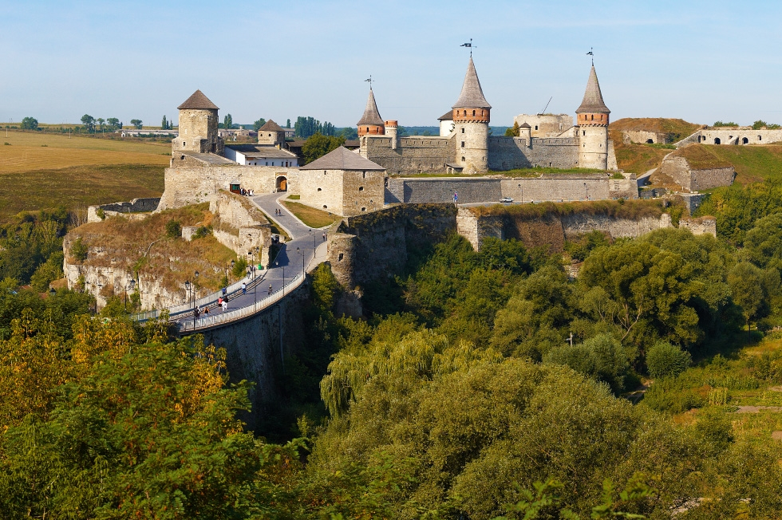
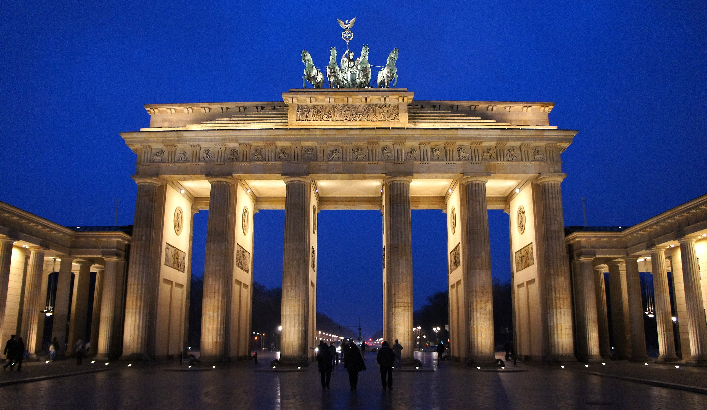
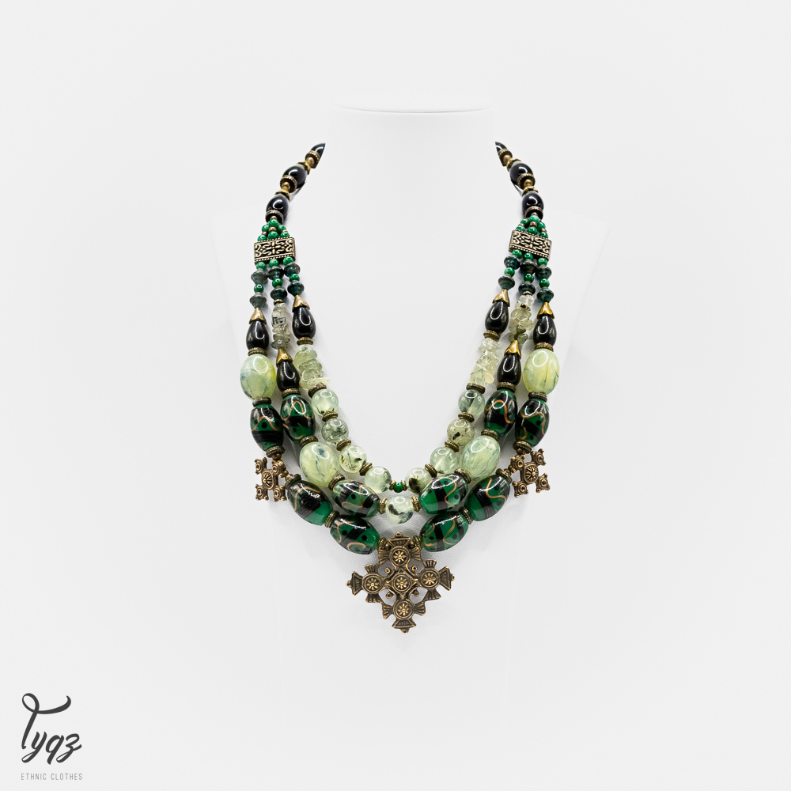
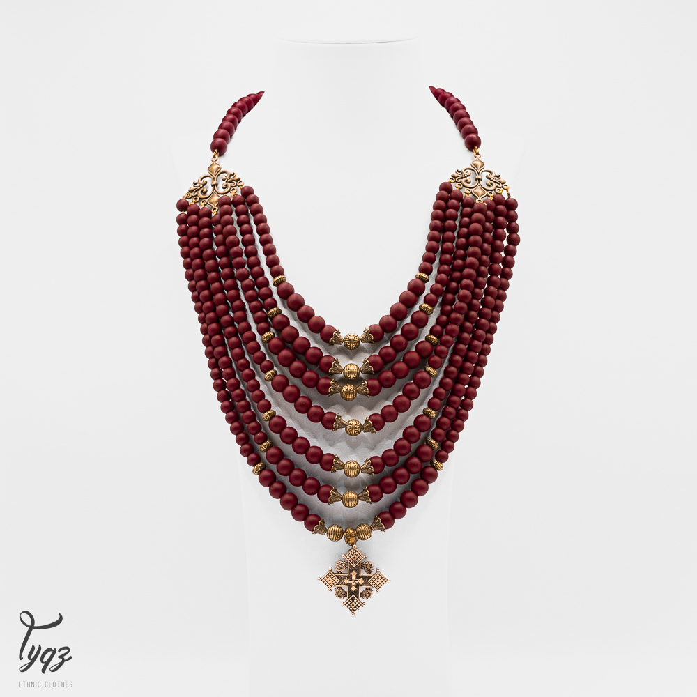
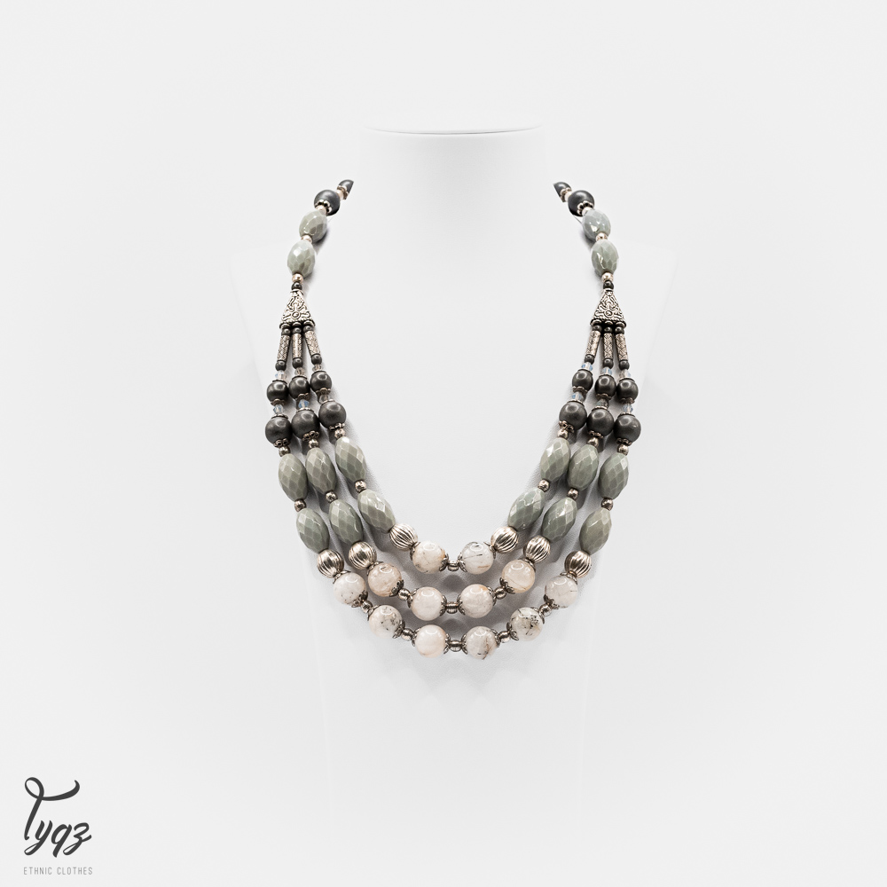
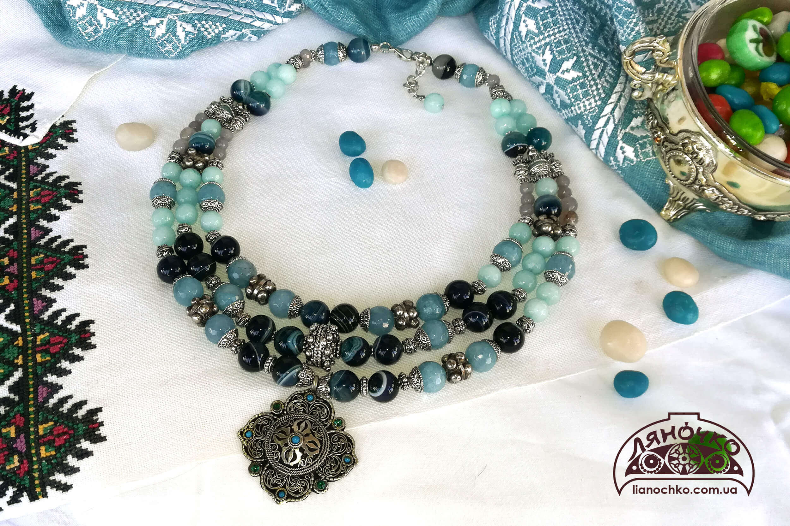

"My hobbies"
|  |
Подорожі |
|
Одним з моїх хобі є подорожі. Я люблю подорожувати Україною та світом загалом. В свої 18 років я відвідала не так багато країн, але все ще попереду. Однією з найважливіших переваг подорожей є можливість розширити свій кругозір. Подорожі надають нам можливість побачити різноманітність світу - від природних красот до архітектурних шедеврів. Це допомагає нам більше розуміти і поважати інші культури і традиції. |
Вивчення мов
Ще одним моїм хобі, яким я дуже захоплююся, і якому приділяю увесь свій вільний час - це вивчення мов.
Мовами, які є вивчаю зараз є:
- Англійська
- Німецька
- Іспанська
У вивченні мов я вбачаю як утилітрану мету, так і можливість розвитку свого кругозору і світогляду, пізнання культур інших народів, а також як можливість відпочити від аналітичних наук, яких у моєму житті через вивчення комп'ютерних наук дуже багато.
Також я вважаю, що вивчення іноземних мов може розширити мої можливості для подорожей та роботи. Вивчення іноземних мов також покращує когнітивне функціонування, збагачує словниковий запас і розвиває навички спілкування. Це може покращити мою кар'єру та відкрити двері до нових можливостей. Також, вивчення іноземних мов може допомогти краще розуміти інших людей та спілкуватися з ними на більш глибокому рівні.
|  | |
|  |  |
|  |  |
Виголотвлення прикрас з напівдорогоцінного каміння |
|
Різного роду рукаділлям я захоплююся з 5-ти років. У пошуці найулюбленішого ремесла я перепробувала бісероплетіння, вишивання бісером/нитками, в'язання крючком нитками/бісером, в'язання спицямиб тощо. Зараз одним з моїх хобі з рукаділля є створення намиста з дорогоцінного каміння. Я роблю намисто з таких каменів:
|